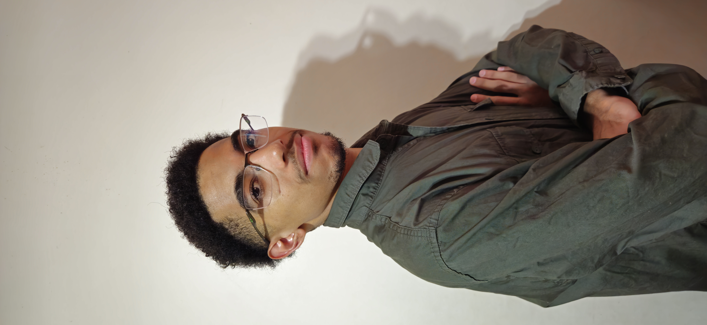

Sobre Mim
Olá, meu nome é André Angelo, muitos me apelidam de "Dedé" também. Tenho 16 anos, estou cursando o Ensino Médio Técnico em Informática no Colégio FECAP, em São Paulo. Já ganhei diversas medalhas científicas ao longo do Ensino Médio (OBA, OBG) e estou buscando aprimorar meus conhecimentos e minhas habilidades no curso da Behring Academy!
Além disso, já fiz cursos ao longo da minha formação, sou formado em inglês pelo CNA (B2 First), fiz o curso CS50: Introduction to Computer Science de Harvard e alguns cursos na Cisco Academy.

Hobbies
- Estudar;
- Jogar FIFA;
- Assistir e jogar Futebol/Basquete;
- Ficar com a família;
- Sair com os amigos.
Objetivos/Metas
- Estudar na USP ou universidades fora do país (especialmente M.I.T ou Carnegie Mellon University);
- Trabalhar em Big Techs (grandes empresas de tecnologia);
- Poder ajudar, futuramente, a comunidade negra, criando uma instituição/fundo para a educação e saúde dos jovens de baixa renda;
- Ter uma família.